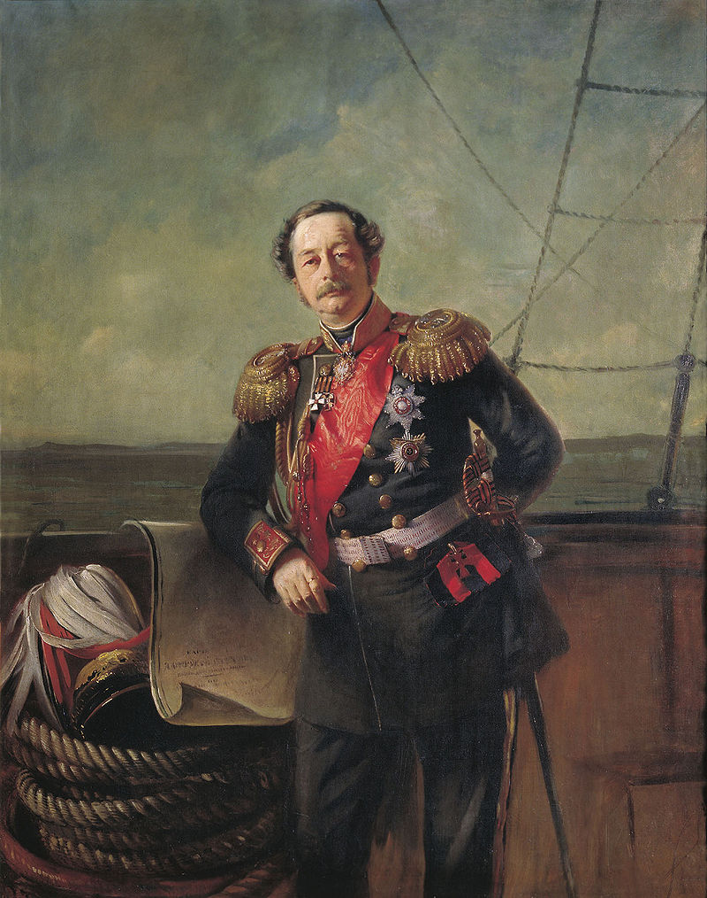
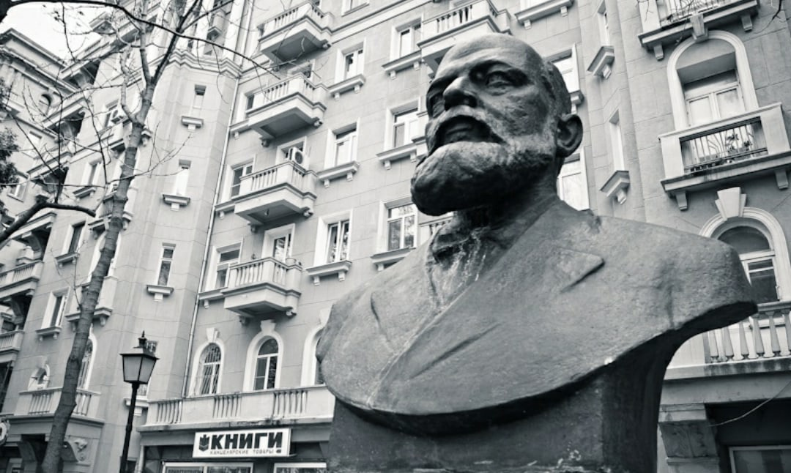
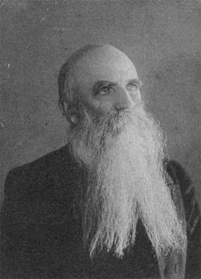

Важные личности
Граф Николай Николаевич Муравьёв-Амурский
(24 августа 1809, Санкт-Петербург — 30 ноября 1881, Париж) — русский государственный деятель, с 1847 по 1861 год служил генерал-губернатором Восточной Сибири. Генерал от инфантерии, генерал-адъютант. В истории расширения российских владений в Сибири Муравьёв-Амурский сыграл видную роль: ему принадлежит почин в возвращении Амура, уступленного Китаю в 1689 году. Основатель Благовещенска, Хабаровска и Владивостока.
Н. Н. Муравьёв воспитывался в Пажеском корпусе, после окончания которого в 1827 г. поступил прапорщиком в лейб-гвардии Финляндский полк. Принимал участие в русско-турецкой войне (1828–1829) и в подавлении польского восстания (1831). В 1833 г. Муравьёв по состоянию здоровья вышел в отставку, однако спустя 5 лет вновь возвратился в армию. В 1840–1844 гг. он работал в одном из отделений Черноморской береговой линии, где в качестве начальника линии много сделал для укрепления побережья. В 1841 г. Муравьёв был произведён в генерал-майоры, но из-за болезни был вынужден навсегда покинуть армию. После лечения во Франции в 1846 г. он был назначен тульским военным и гражданским губернатором. Будучи на посту губернатора, Муравьёв обратился к императору Николаю I с предложением отменить крепостную зависимость крестьян, однако не встретил понимания. В сентябре 1847 г. император назначил его генерал-губернатором Восточной Сибири. Муравьёв в качестве генерал-губернатора в 1847–1861 гг. проводил активную политику освоения и изучения восточно-сибирских земель, привлекая к работе многих ссыльных декабристов. Он сыграл значимую роль в истории расширения российских владений в Сибири, оказав исследователю Дальнего Востока, адмиралу Г. И. Невельскому содействие в изучении устья Амура и открытии России свободного пути к Тихому океану. Благодаря решительности Муравьёва, осуществлявшего хозяйственное освоение и фактическое занятие Уссурийского края военными силами, удалось подготовить почву для подписания Айгунского (1858) и Пекинского (1860) договоров, по которым территория, находившаяся в совместном владении России и Китая, вошла в состав российских владений. За свою дипломатическую деятельность Н. Н. Муравьёв в 1858 г. получил титул графа Амурского. В 1861 г. Муравьёв-Амурский оставил должность генерал-губернатора и был назначен членом Государственного Совета. С 1868 г. до самой кончины он почти безвыездно проживал в Париже. 18 (30) ноября 1881 г. Николай Николаевич Муравьёв-Амурский скончался и был похоронен на Монмартрском кладбище в Париже. В 1990 г. его останки были перевезены во Владивосток и перезахоронены в районе исторического центра города.
Яков Лазаревич Семёнов
(1831, Минусинск — 23 февраля 1913, Владивосток) — русский купец 1-й гильдии, потомственный почётный гражданин. Считается первым гражданским жителем города Владивосток.
Яков Лазаревич Семёнов происходит из семьи крестьян Енисейской губернии, Минусинского округа, Шушенской волости. Получил домашнее образование. Продав дом, доставшийся ему в наследство от отца, Яков Лазаревич закупил текстильные изделия и переехал жить в Николаевск-на-Амуре. Занимался торговлей на Амуре с конца 50-х — начала 60-х годов XIX века. В сентябре 1860 года он привёз в залив Святой Ольги товары на продажу: текстильные изделия, чай и сахар. Зимой того же года он объездил побережье от Ольги на север, до устья реки 3еркальной, и на юг, до Сучанской долины. Здесь он впервые столкнулся с добычей китайцами морской капусты. Добытые морепродукты китайцы продавали маньчжурам. С 1861 года он ведёт пушную меновую торговлю в южном Приморье и во Владивостоке. Яков Лазаревич знал китайский язык, что позволяло ему успешно вести торговлю. Осенью 1861 года Яков Лазаревич с женой и сыном переселяются во Владивосток, а в 1862 году он становится владельцем первого земельного участка в городе, проданного в частные руки.
В январе 1867 Яков Лазаревич становится купцом 2-й гильдии. В течение двух лет, с 1870 по 1871 год занимает пост городового старосты Владивостока. Должность старосты была почётной и не оплачивалась. Напротив, Семёнов отдал свой дом под канцелярию, отапливал и освещал её. Яков Лазаревич разбирал дела начиная от случаев мошенничества и клеветы, до вопросов о благоустройстве города. Многие вопросы он выносил на общественное обсуждение. В 1874 году Семёнова выбрали на должность старосты во второй раз. Через год он передал свои обязанности первому городскому голове Михаилу Кузьмичу Фёдорову, а сам стал гласным в местной городской думе. В 1872 году Якова Лазаревича приписывают к владивостокскому купеческому обществу по 2-й гильдии. С 1878 также начинает заниматься рыбным промыслом на острове Сахалин. В 1895 году совместно с Г. Демби создал фирму «Семёнов и К». Помимо прочего занимался добычей золота, поставками продовольствия и фуража для войск. К 1900 Яков Лазаревич становится купцом 1-й гильдии и получает звание потомственного почётного гражданина.
Яков Лазаревич умер 23 февраля 1913 года и был похоронен на Покровском кладбище во Владивостоке. По адресу улица Светланская, 46 располагается дом Якова Лазаревича Семёнова, построенный в 1900—1903 годах, который сейчас является объектом культурного наследия Российской Федерации. А на месте, где располагался первый дом Семёнова во Владивостоке, в 1995 установлен памятный знак.
Евгений Степанович Бурачёк
(8 января 1836, Санкт-Петербург — 1911, Санкт-Петербург) — русский адмирал, первый начальник военного поста Владивосток.
Евгений Степанович Бурачёк родился в 1836 году в Санкт-Петербурге в семье кораблестроителя, генерал-лейтенанта Корпуса корабельных инженеров Степана Онисимовича Бурачка. В возрасте шести лет был отправлен в Морской кадетский корпус. Повзрослев, проходил службу на кораблях Балтийского флота, в 1853 году получил звание мичмана, через три года в 1856 получил звание лейтенанта.
С 1859 года осуществлял кругосветное плавание на клипере «Разбойник», однако во время этого плавания у Евгения Степановича развилась сильнейшая морская болезнь. После захода «Разбойника» в военный пост Владивосток, 22 июня 1861 года, Бурачёк принял решение сойти на берег и добираться в Санкт-Петербург по суше.
За два дня до прибытия «Разбойника» во Владивосток, 20 июня 1861 год, государственный инспектор майор Хитрово отстранил от командования поста Владивосток прапорщика Комарова, фактически первостроителя города. Прибытие Евгения Степановича оказалось как нельзя кстати, и майор Хитрово сразу же назначил его начальником военного поста, после чего назначение было утверждено губернатором Приморской области Петром Казакевичем. После назначения на должность Бурачёк активно принялся за работу, развивая строительство военного поста. При нём была закончена пристань, также были проведены работы по углублению дна и были построены военные склады и сухарня. При нём было завершено строительство церкви и начаты постройки гражданских сооружений. Всё время его службы ему приходилось преодолевать значительные трудности, связанные и с климатом, и с удалённостью от развитых поселений. Поскольку Бурачёк обладал некоторыми познаниями в медицине, то фактически он выполнял ещё и обязанности главного лекаря поста, помогая солдатам переносить недуги. С 1862 года Владивосток уже именуется портом, а не военным постом, с 25 октября 1862 года во Владивостоке с целью увеличения товарооборота разрешена беспошлинная торговля. Владивосток стал порто франко на долгие 50 лет. Одним из достижений Бурачка стала разведка залежей угля в окрестностях Владивостока, что пошло на пользу в развитии города на начальном этапе строительства. Также он наладил торговлю с китайцами, жившими в окрестностях поста.
В мае 1863 года Бурачёк из-за своей болезни вынужден был оставить свою должность и отправиться в Санкт-Петербург. В Петербурге он продолжил карьеру, служил на Балтийском флоте на должностях, не связанных с выходом в море.
В 1911 году Евгений Степанович Бурачёк скончался в возрасте 75 лет, похоронен он был на Смоленском кладбище в Санкт-Петербурге. В 1986 году одним из потомков Евгения Степановича был инициирован процесс переноса его праха во Владивосток. 2 июля 1988 года прах Евгения Степановича Бурачка был перезахоронен на высоком холме Морского кладбища во Владивостоке, на его могиле установлена плита с надписью «Ничем из ничего созидать». Именем Евгения Степановича Бурачка названа сопка, расположенная в Первомайском районе Владивостока (мыс Чуркин).